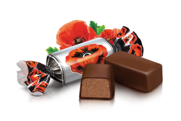
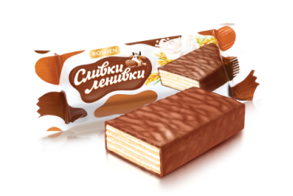
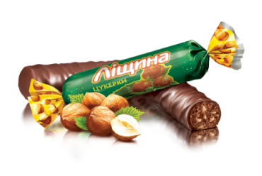

Всім привіт, я Ямі і я мопс, який дуже сильно полюбляє солодощі.
Сьогодні я розкажу вам, чому саме солодощі і чому вони так
важливі в нашому житті.
Доречі, моє імʼя з англійської мови перекладається як “Смачний”.

Пралене з додаванням карамельної крихти, пасти ядер горіхів фундука та мигдалюпокрите шоколадною глазурʼю

Світлі вафельні листи, поєднані молочно-вершковою начинкою та покриті глазур’ю.

Праліне з додаванням подрібненої та тертої ліщини та мигдалю, покрите шоколадною глазур’ю.
З'ївши чергову шоколадку, ви не просто набираєте трохи додаткових калорій, але покращуєте тим самим роботу мозку, настрій і стаєте трішки добрішим. Вирішивши поласувати шоколадкою, віддавайте перевагу саме чорному шоколаду з високим вмістом какао-бобів. У цьому вигляді шоколаду менше жиру і цукру, ніж в молочному шоколаді, але зате магнію, кальцію, заліза, білка, антиоксидантів і вітамінів предостатньо.